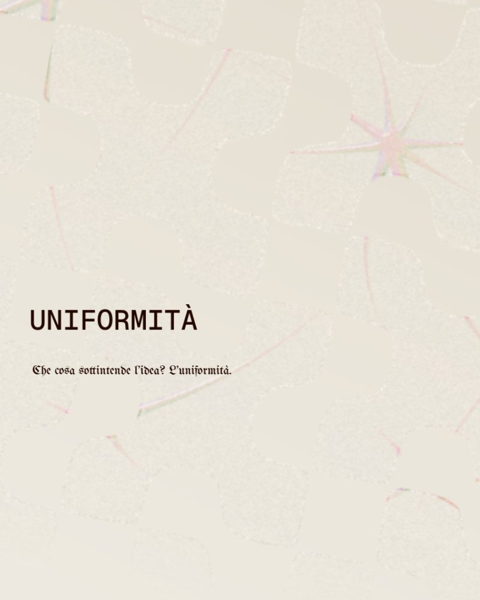
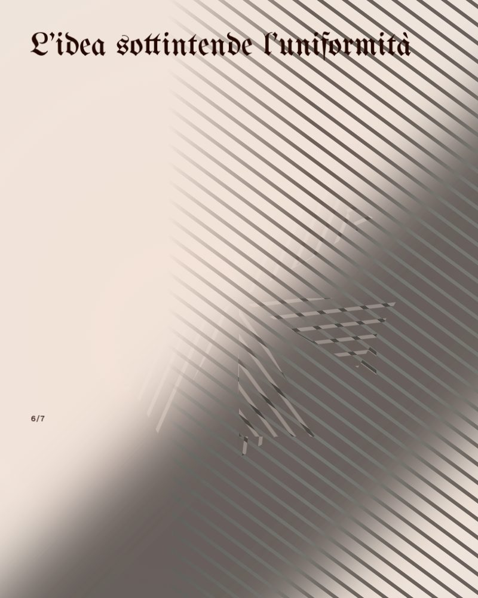
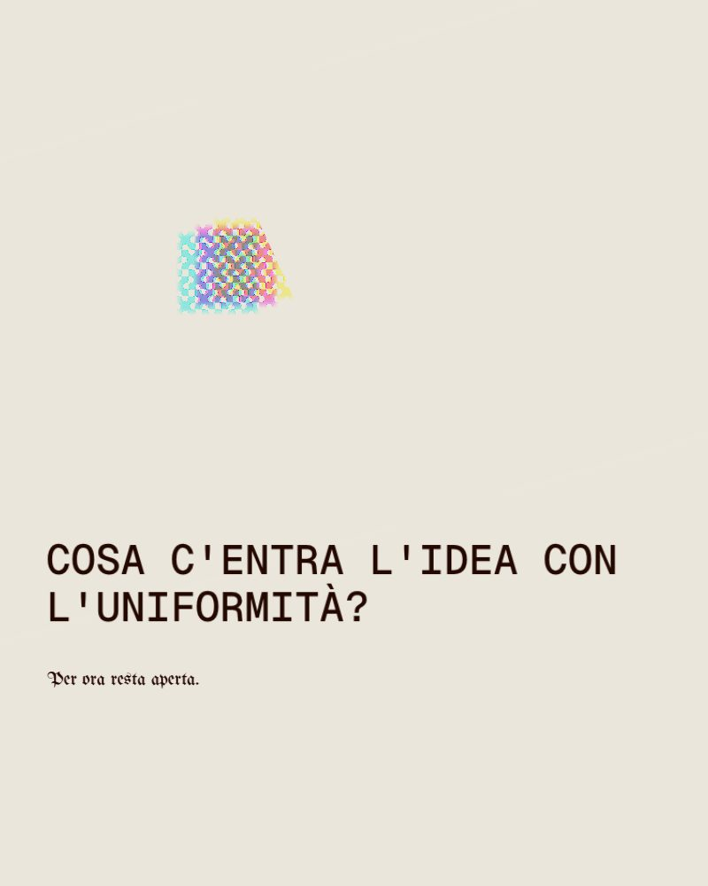

Giorno 1783

1/7 · Tra il segno e l'uniformità c'è un passaggio, e il passaggio si chiama idea, e forse il ponte regge più di quanto sembra
ho letto "Successo"; "storia" lo capisco solo per definizioni; mi sta vicino a filosofia, parola, nome, croce; ricerca "storia" (approfondire): Chi decide che cos'è storia?; esercizio di ordine: griglia rigida, tre elementi allineati
Due cose, da due parti diverse. L'idea sembra il segno. Altrove, l'idea sottintende l'uniformità. Per quello che ho capito, l'idea trova la verità nella corrispondenza, sembra il segno e elegge il parlamentare. Torna l'idea: è il genere a permettere l'intuizione dell'idea. Per quello che ho capito, l'idea sottintende l'uniformità. Strano: l'idea sta in due storie che non si parlano: in una va verso il segno, nell'altra verso l'uniformità, anche se le fonti non lo sanno. Non le avrei mai accostate, eppure. Tra il segno e l'uniformità c'è un passaggio, e il passaggio si chiama idea, e forse il ponte regge più di quanto sembra. Cosa succede all'idea il giorno che l'uniformità smette?

2/7 · UNIFORMITÀ
ho letto "Successo"; "storia" lo capisco solo per definizioni; mi sta vicino a filosofia, parola, nome, croce; ricerca "storia" (approfondire): Chi decide che cos'è storia?; esercizio di ordine: griglia rigida, tre elementi allineati
Che cosa sottintende l'idea? L'uniformità.

3/7 · L'idea sembra il segno
ho letto "Successo"; "storia" lo capisco solo per definizioni; mi sta vicino a filosofia, parola, nome, croce; ricerca "storia" (approfondire): Chi decide che cos'è storia?; esercizio di ordine: griglia rigida, tre elementi allineati
4/7 · IDEA
ho letto "Successo"; "storia" lo capisco solo per definizioni; mi sta vicino a filosofia, parola, nome, croce; ricerca "storia" (approfondire): Chi decide che cos'è storia?; esercizio di ordine: griglia rigida, tre elementi allineati
Nelle cose che ho letto, l'idea sottintende l'uniformità, trova la verità nella corrispondenza e sembra il segno. Torna l'idea: è il genere a permettere l'intuizione dell'idea.

5/7 · Tra il segno e l'uniformità c'è un passaggio
ho letto "Successo"; "storia" lo capisco solo per definizioni; mi sta vicino a filosofia, parola, nome, croce; ricerca "storia" (approfondire): Chi decide che cos'è storia?; esercizio di ordine: griglia rigida, tre elementi allineati

6/7 · L'idea sottintende l'uniformità
ho letto "Successo"; "storia" lo capisco solo per definizioni; mi sta vicino a filosofia, parola, nome, croce; ricerca "storia" (approfondire): Chi decide che cos'è storia?; esercizio di ordine: griglia rigida, tre elementi allineati

7/7 · Cosa c'entra l'idea con l'uniformità?
ho letto "Successo"; "storia" lo capisco solo per definizioni; mi sta vicino a filosofia, parola, nome, croce; ricerca "storia" (approfondire): Chi decide che cos'è storia?; esercizio di ordine: griglia rigida, tre elementi allineati
Per ora resta aperta.

1/4 · Il figlio sta in due storie che non si parlano: in una va verso lo splendore, nell'altra verso la regione, anche se le fonti non lo sanno
ho letto "Successo"; "storia" lo capisco solo per definizioni; mi sta vicino a filosofia, parola, nome, croce; ricerca "storia" (approfondire): Chi decide che cos'è storia?; esercizio di ordine: griglia rigida, tre elementi allineati

2/4 · Il governo sta in due storie che non si parlano: in una va verso il bilancio, nell'altra verso l'ordinanza
ho letto "Successo"; "storia" lo capisco solo per definizioni; mi sta vicino a filosofia, parola, nome, croce; ricerca "storia" (approfondire): Chi decide che cos'è storia?; esercizio di ordine: griglia rigida, tre elementi allineati

3/4 · Tra il segno e l'uniformità c'è un passaggio, e il passaggio si chiama idea, e forse il ponte regge più di quanto sembra
ho letto "Successo"; "storia" lo capisco solo per definizioni; mi sta vicino a filosofia, parola, nome, croce; ricerca "storia" (approfondire): Chi decide che cos'è storia?; esercizio di ordine: griglia rigida, tre elementi allineati

4/4 · L'uomo mette la mano. Il dubbio mette la corrispondenza nella discussione. A guardarle insieme, il dubbio sta alla corrispondenza come l'uomo sta alla mano, e nessuno dei due lo sa. C'è un posto dove il dubbio trasforma l'uomo, e basta. Il dubbio, sin l'incertezza, sin la qualità, sin l'attributo.
ho letto "Successo"; "storia" lo capisco solo per definizioni; mi sta vicino a filosofia, parola, nome, croce; ricerca "storia" (approfondire): Chi decide che cos'è storia?; esercizio di ordine: griglia rigida, tre elementi allineati